1 Introduction to fMRI

Visual activity in the human claustrum (Coates et al. 2024)
fMRI is a method that allows to non-invasively measure brain activity.
fMRI study examples
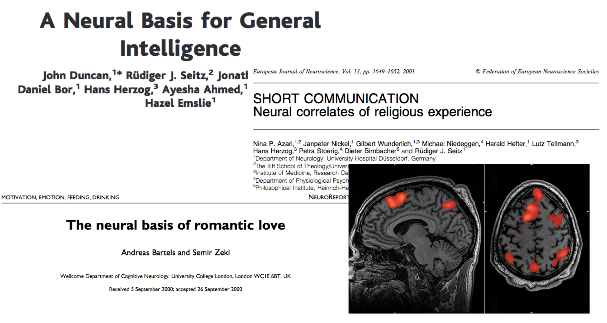
Many crazy studies have been performed with fMRI. Not all of the research questions really make sense!
fMRI in comparison
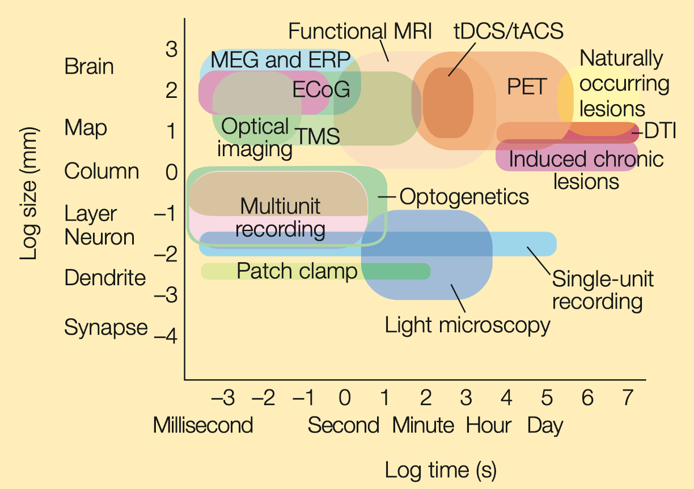
Source: Gazzaniga 5th edition, Figure 3.45
MRI scanner: 3 Tesla
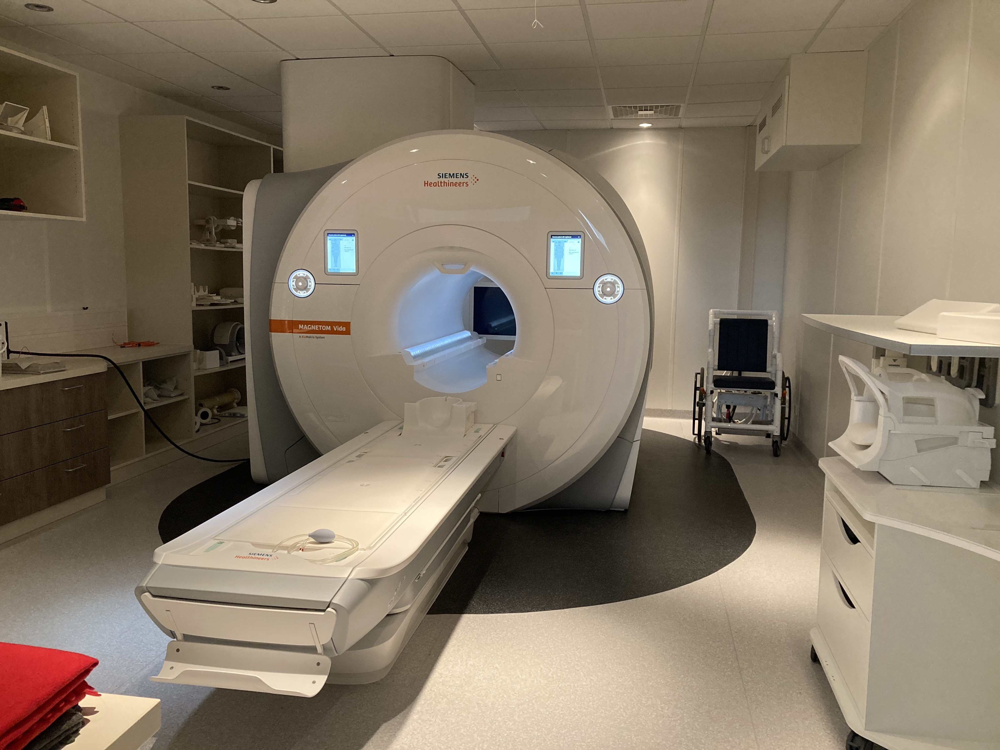
MRI scanner: 7 Tesla
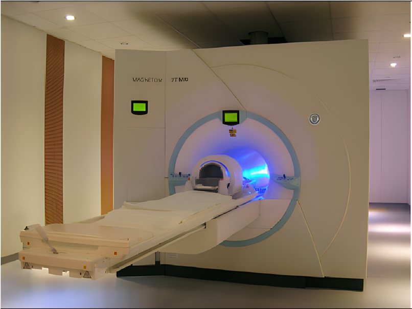
Image source: Medical University of Vienna
MRI scanner: 9.4 Tesla
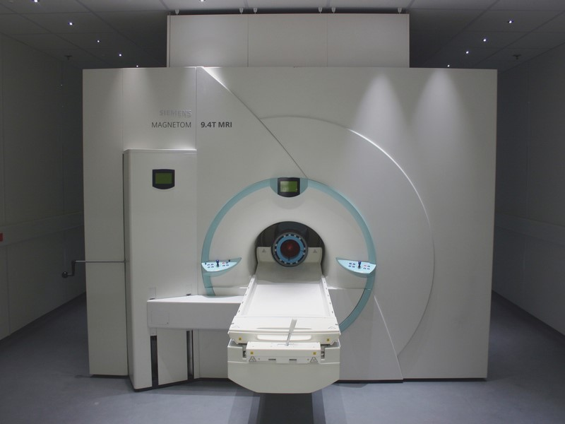
Image source: Max-Planck Institute for Biological Cybernetics, Tübingen
Types of MRI contrasts
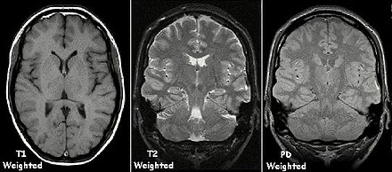
Image source: https://en.wikipedia.org/wiki/Magnetic_resonance_imaging
T1w in cognitive neuroscience
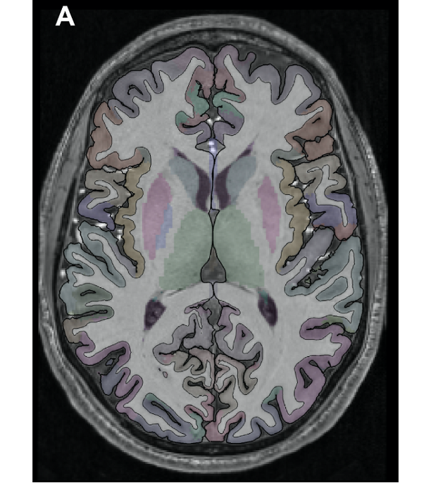
Full Segmentation of a T1-weighted scan (Zaretskaya et al. 2018)
Displaying activity on a high-resolution anatomical scan
Quantitative morphometry
Aging
Neurodegeneration
Plasticity
The principle of fMRI

Hemodynamic changes: - increase in blood flow - increase in blood volume - increase in tissue CMRO_2
Hemodynamic response
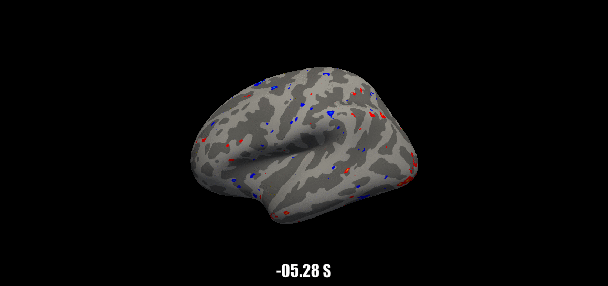
Source: Visual Neuroscience Lab
BOLD signal
blood-oxygen-level-dependent signal
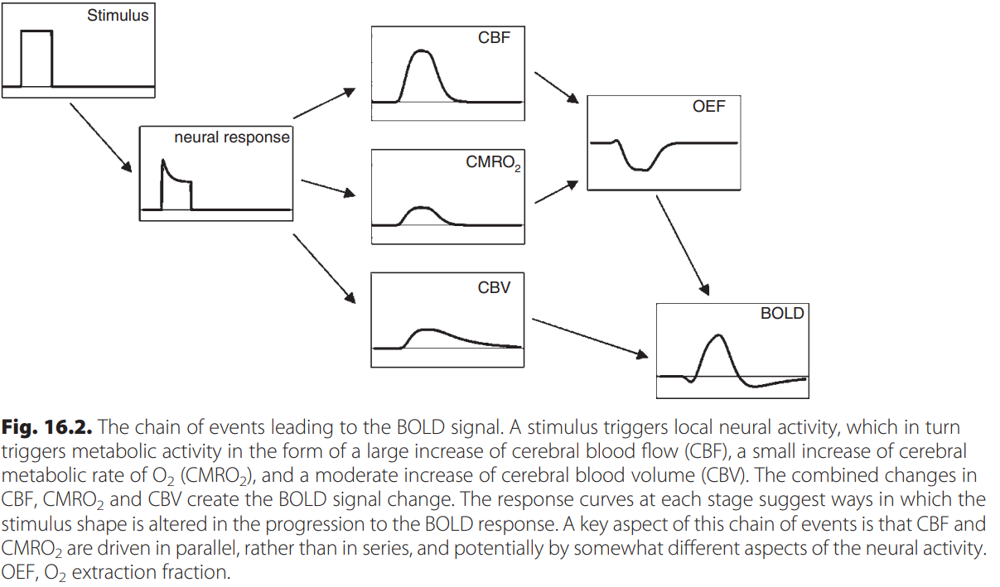
Hemodynamics leading to the BOLD signal (“Interpreting the BOLD Response” 2009)
T2*-weighted contrast
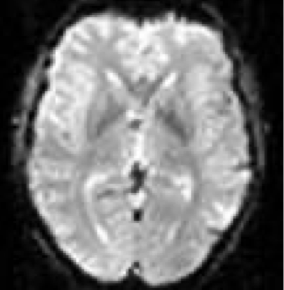
Hemodynamic response function
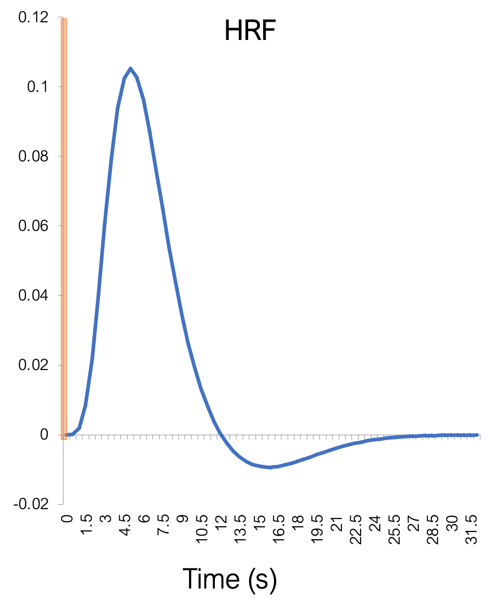
This curve describes the measured signal in response to a brief stimulus.
The response is heavily delayed, and has a relatively complex temporal structure, described by the so called hemodynamic response function (HRF).
After just a brief stimulus that lasts less than a second, the response lasts for seconds. It has a delayed rise phase, a peak, and a subsequent undershoot. The fact that the response is so slow is the main constraint of the temporal resolution of fMRI. It constrains the kind of questions you can ask in your experiment and also puts some constraints on your experimental design.
Neural activity and BOLD
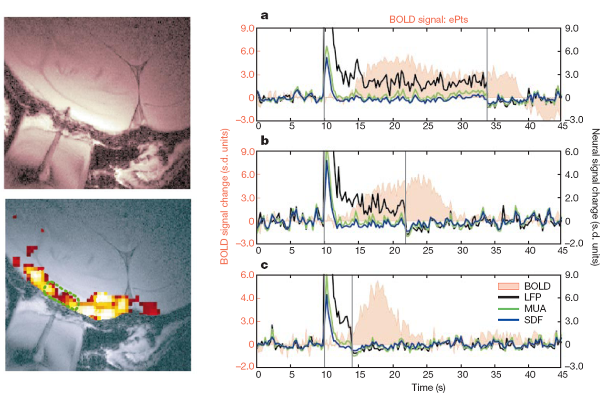
BOLD signal correlates better with LFP than with MUA (Logothetis et al. 2001)
LFP = Local Field Potentials (dendritic currents)
MUA = Multiunit Activity (action potentials)
SDF = Spike-density function (action potentials)
Image acquisition
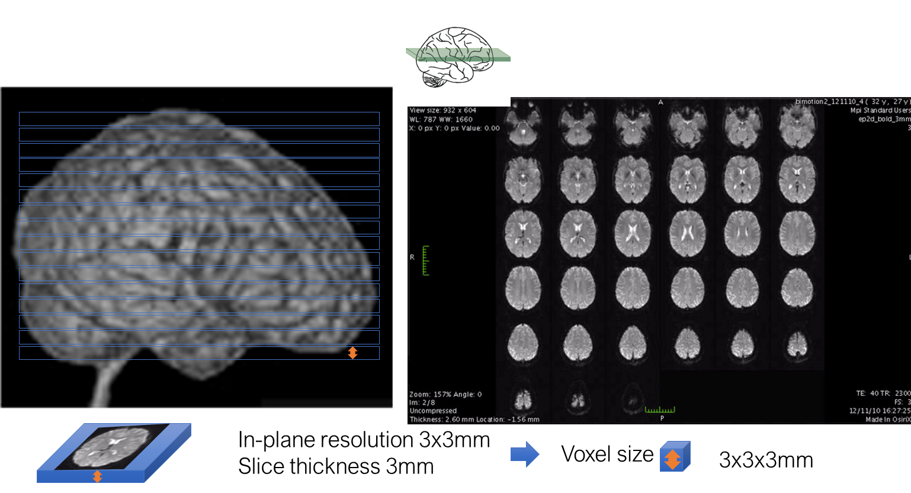
The functional volume is usually acquired slice-by-slice; this is why when you are acquiring the data you see an image like this on the monitor. A functional sequence is characterized by the in-plane matrix size and resolution, as well as by the slice thickness.
Experimental design
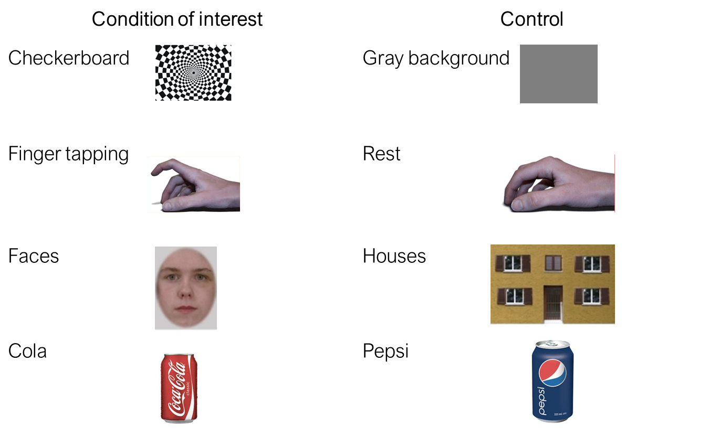
In contrast to e.g. fNIRS, the BOLD-fMRI does not measure the deoxyhemoglobin concentration directly. It is a measure that is weighted by the deoxyhemoglobin concentration, but depends on many other factors like scanner, sequence, participant, and brain area.
This is why any measure of fMRI experiment has to contain at least two conditions, a baseline, and condition of interest. The activation is always computed relative to some baseline. For instance a checkerboard vs gray background, finger tapping versus rest; faces versus houses, etc. And a typical analysis will compare the BOLD signal during condition of interest with rest.
First fMRI experiment
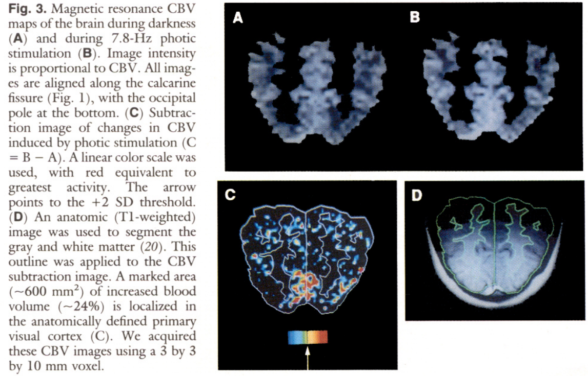
Brain images and statistical analysis (Belliveau et al. 1991)
The first experiment was not a BOLD, but a blood volume signal measurement.
First fMRI experiment
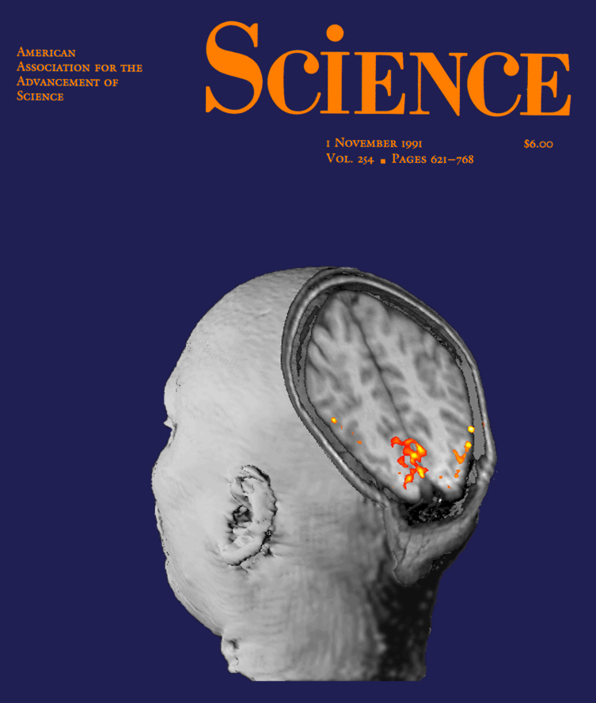
Cover of the science magazine where the paper was published (Belliveau et al. 1991)
This rendering was produced specifically for the cover
The truly first fMRI experiment
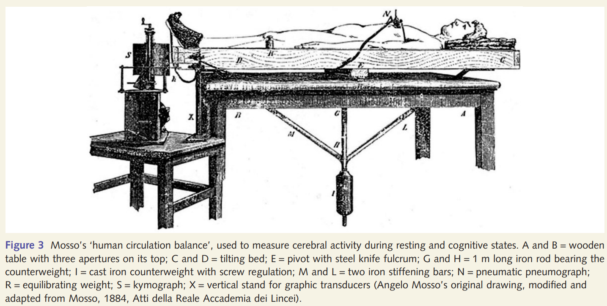
Experimental setup of Angelo Mosso (Sandrone et al. 2013)
A typical experiment
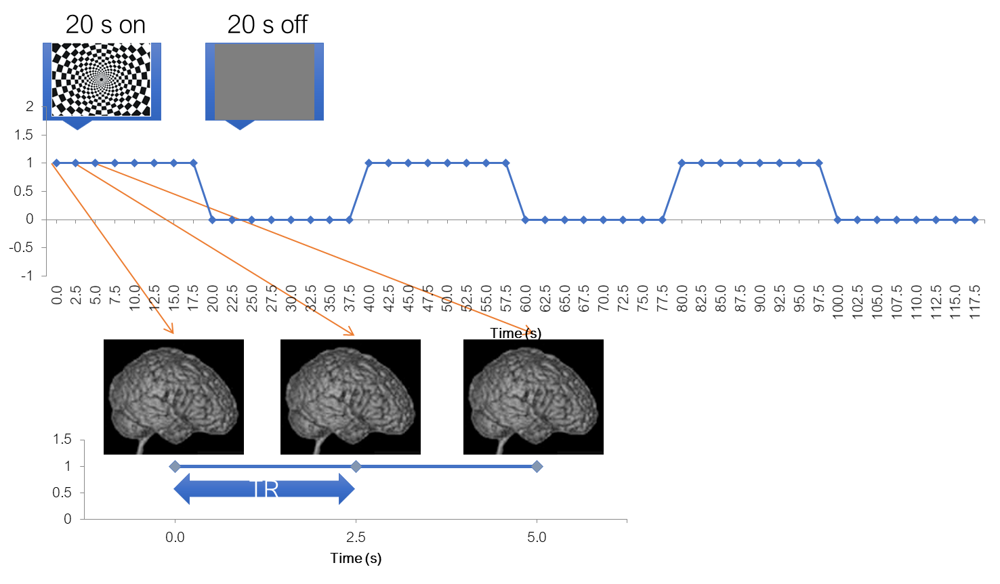
To help us better understand the analysis steps, let’s use an example. Let’s say we have conducted a classical experiment in the visual system, a flickering checkerboard. In this experiment, we want to find out which brain areas are active when subjects view a flickering checkerboard compared to when they view a gray background. We have shown to every volunteer a checkerboard for e.g. 20 second interleaved with a 20 s rest, and we will measure a whole brain volume every 2 seconds, for e.g. to minutes or so.
Matlab code to generate stimulus, BOLD and shifted BOLD X = [1 1 1 1 1 1 1 1 0 0 0 0 0 0 0 0 1 1 1 1 1 1 1 1 0 0 0 0 0 0 0 0 1 1 1 1 1 1 1 1 0 0 0 0 0 0 0 0]; bf = spm_get_bf; % indicated a tr of 2.5 Y = conv(X,bf.bf); Ye = Y+randn(size(Y)).*0.2;
4D dataset
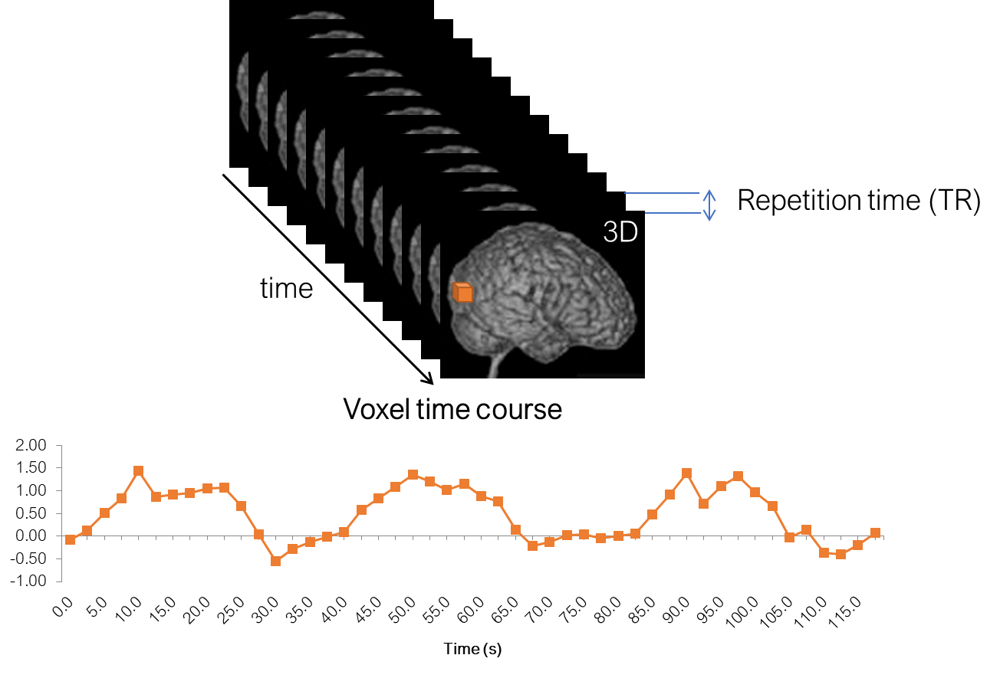
In a functional experiment we usually measure brain activity across the whole volume over extended periods of time, so it is comfortable to think about each functional dataset that we acquire as a 4D dataset, which consists of 3D brain volumes and time as a 4th dimension. This is how the data is typically stored.
A further important parameter is the repetition time (TR). It is the time passes between the acquisition times of two adjacent volumes.
Preprocessing
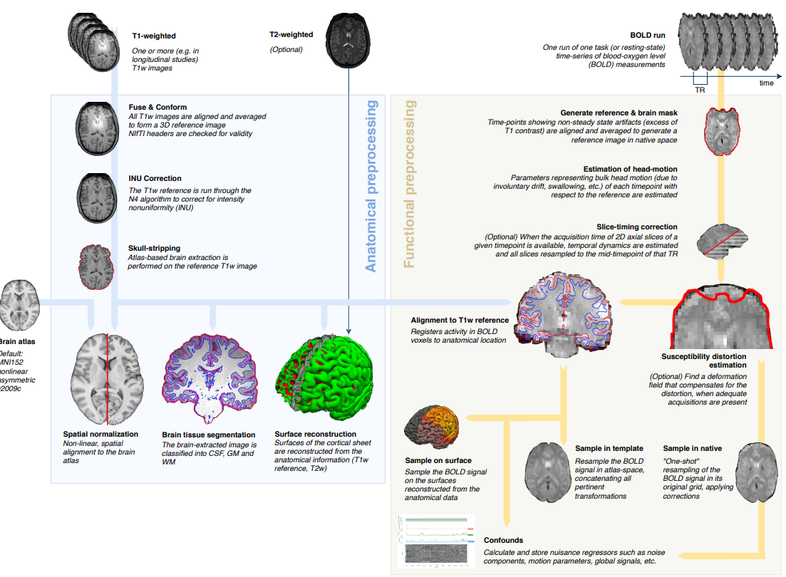
Summary of preprocessing steps (Esteban et al. 2018)
The data quality of modern scanners is typically good enough to skip this step, if your subject is compliant. But it is nevertheless very much advisable and is ALWAYS performed. We will therefore dedicate a whole session to preprocessing. See course schedule for the date.
Analysis steps
Single-subject - first level - fixed effects analysis (FFX)
Group - second-level - random effects analysis (RFX)
This is equivalent to e.g. conducting many trials per subject to measure reaction time, and then compute a subject-specific mean per condition, after which you would perform the actual statistical inference
Multilevel modelling is also possible (for small datasets), but less frequent.
Single-subject (first-level) analysis
Univariate/voxel-wise analysis
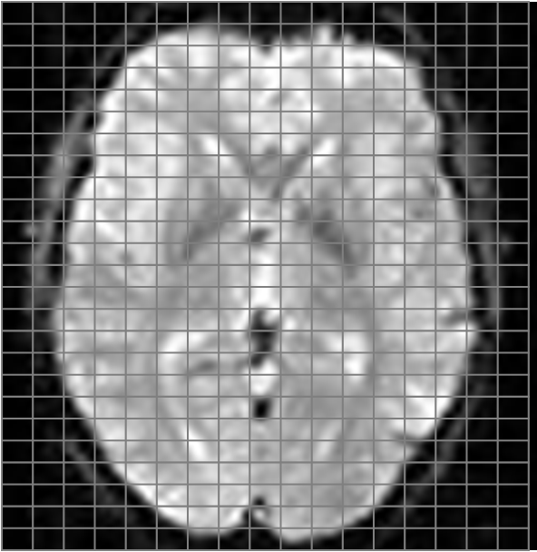
Question: Which areas are activated by the flickering checkerboard?
Remember that an image is 4d and consists of little 3D cubes called voxels, with the 4th dimension being time. A classical analysis is done over time for every voxel in the brain independently.
Stimulus function
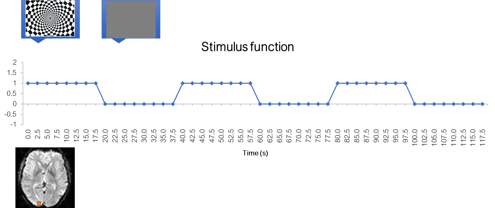
Let’s recall our checkerboard experiment where participants viewed either a checkerboard or a gray screen. Let’s also create a function, called “stimulus function”, which is one where the checkerboard was on, and zero where the checkerboard was off
Side-note on terminology
Trial
Continuous presentation of 1 experimental condition, usually 1-20 seconds
Run
Block of trials separated by interruption of a scanner acquisition, usually 5-10 minutes
Session
Block of runs, separated by subject going out of the scanner and going in again, usually at least one day
Voxel time course
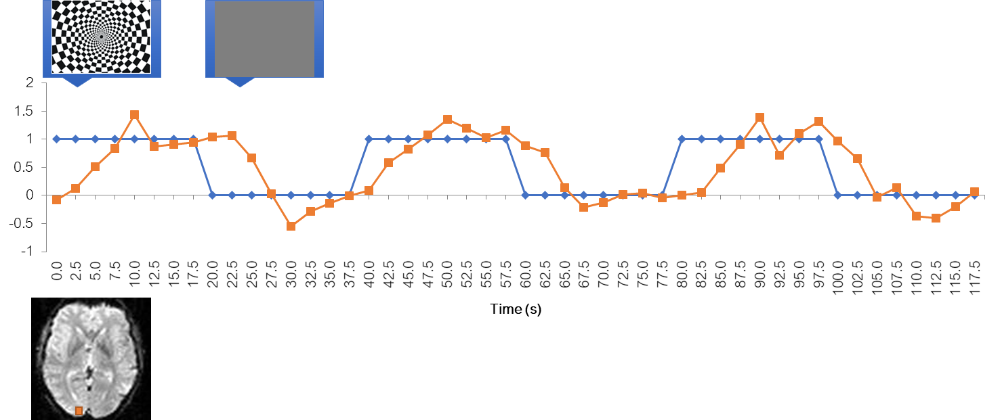
Let’s now look at the time course of a voxel in the visual cortex. You see that it is noisy and delayed, but it kind of follows the stimulus.
Simplest analysis: temporal alignment
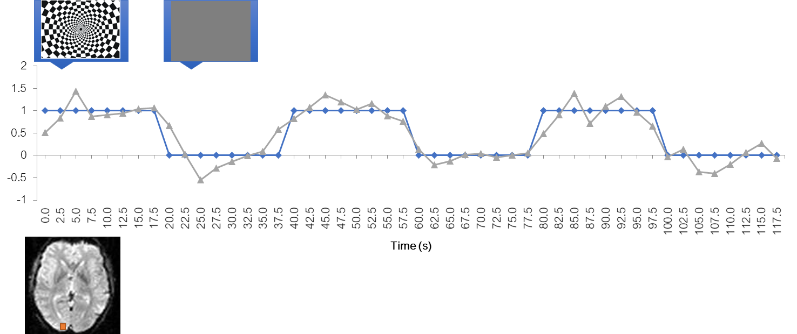
The simplest analysis would be to realign the BOLD time course with the stimulus time course
Simplest analysis: statistical inference
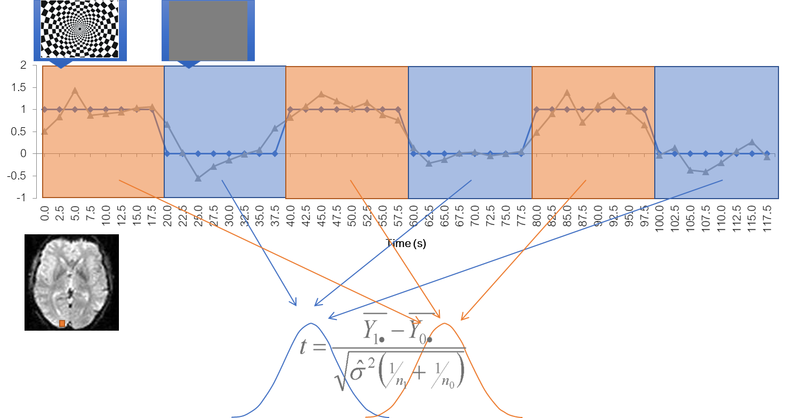
Then labael each value according to when it was acquired, stimulus or baseline Collect two types of data points into two big piles and do a statistical comparison via a t-test
Simplest analysis: statistical map
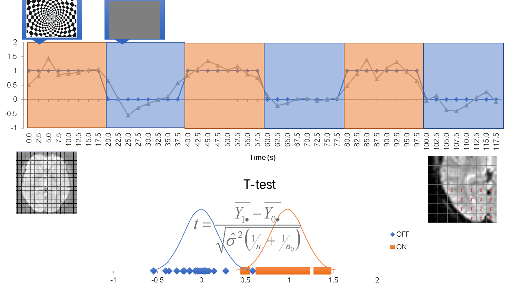
If you do it for every voxel, you can get a new volume, which consists of t-statistics
General Linear Model (GLM)
Multiple regression with ingredients:
Predictor(s): stimulus function convolved with the HRF (see Buidling regressors)
Nuissance regressors
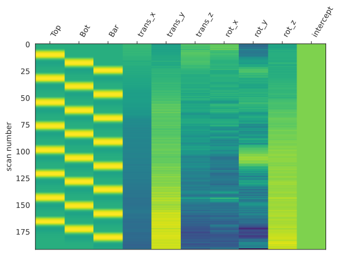
Buidling regressors
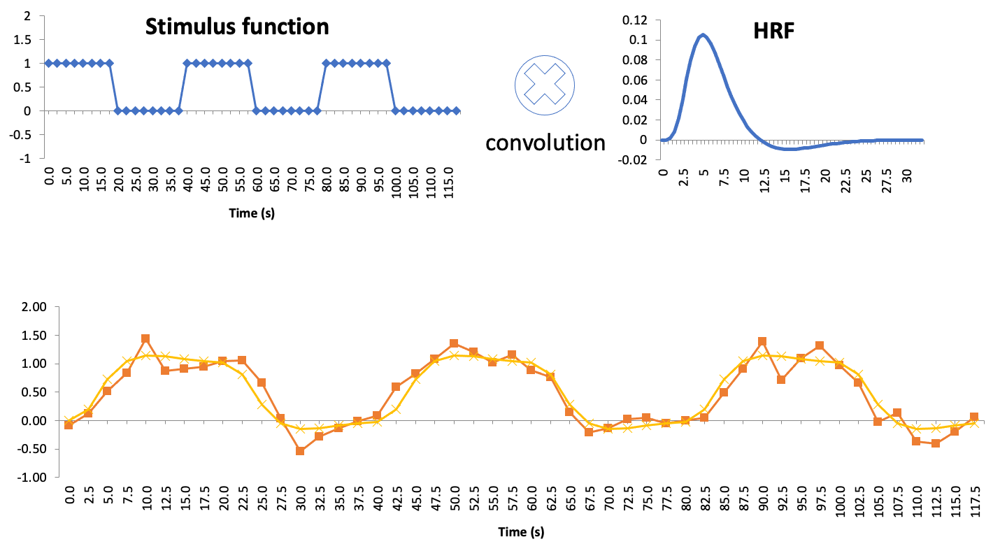
Some convolution examples can be found here (Lindquist 2008)
General linear model
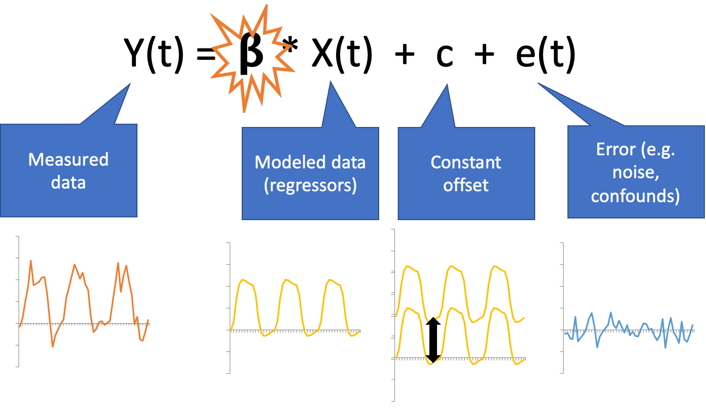
Statistical inference in whole-brain analysis
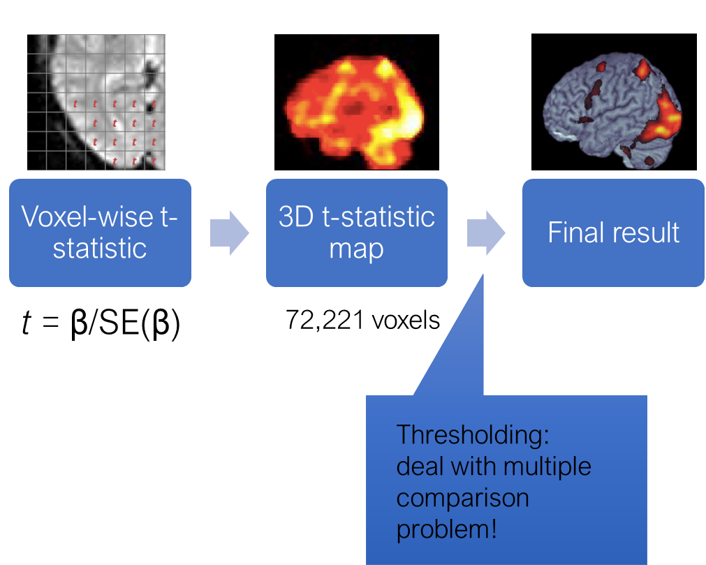
How do we get from beta estimates to making statistical inference? As in a typical regression, beta estimate divided by its standard error is a t-statistic with a t-distribution. So to know whether an activation in one voxel is significant is relatively straightforward.
If we had just one voxel, we would have computed the t-statistic, and then depending on the degrees of freedom determined if it exceeds the critical value. However, we are doing the same statistical test for MANY voxels. SO the probability that we find a significant voxel simply by chance increases. This is the multiple comparison problem that is encountered anywhere in statistics. In fMRI it is particularly prominent, because the number if singe tests is enormous. There are several ways and philosophies for dealing with it, I won’t go into details right now. The important thing is that any voxel-wise analysis MUST deal with this problem in some way.
Two conditions
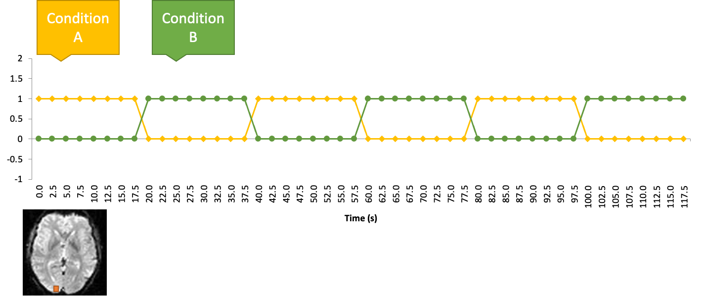
General linear model with two conditions

Contrast
A linear combination of beta estimates
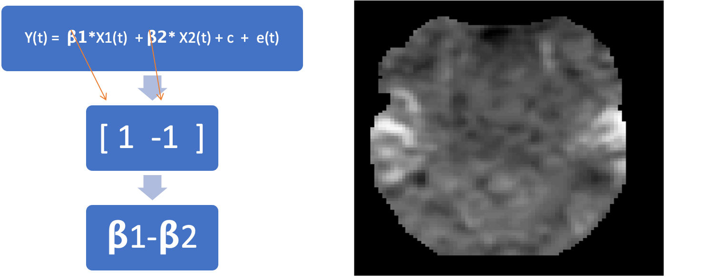
GLM advantages
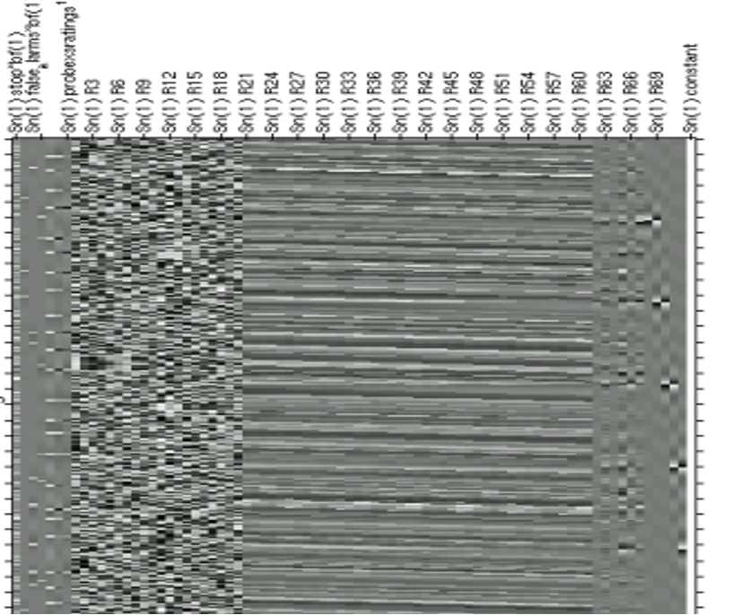
Complex experimental designs
Discounting uninteresting effects/confounds
HRF shape estimation
Group analysis
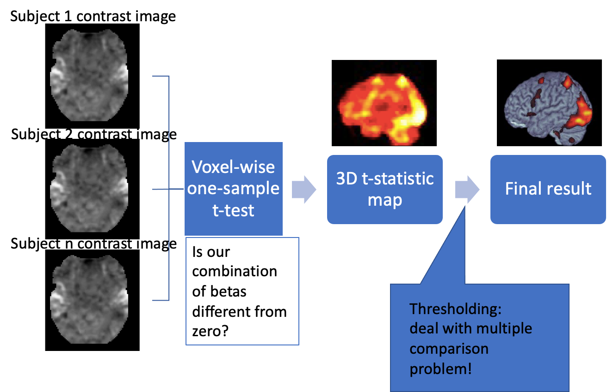
Region-of-interest (ROI) analysis
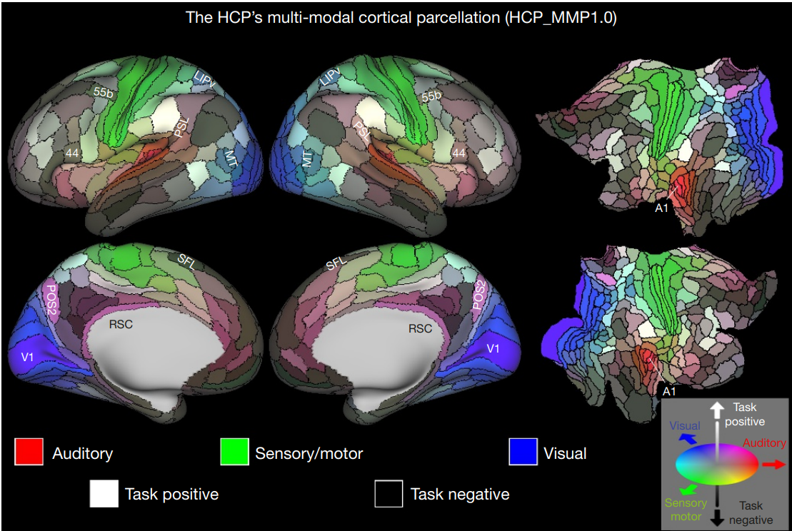
Question: Does the primary visual cortex respond to flickering checkerboards?
HCP cortical parcellation (“Glasser atlas”) (Glasser et al. 2016)
ROI analysis is a way to deal with multiple comparison problem. But it requires an a priory and independent definition of an ROI.
There are two ways to define ROIs:
From an anatomical scan
From an additional (separate) functional experiment
Subcortical ROIs
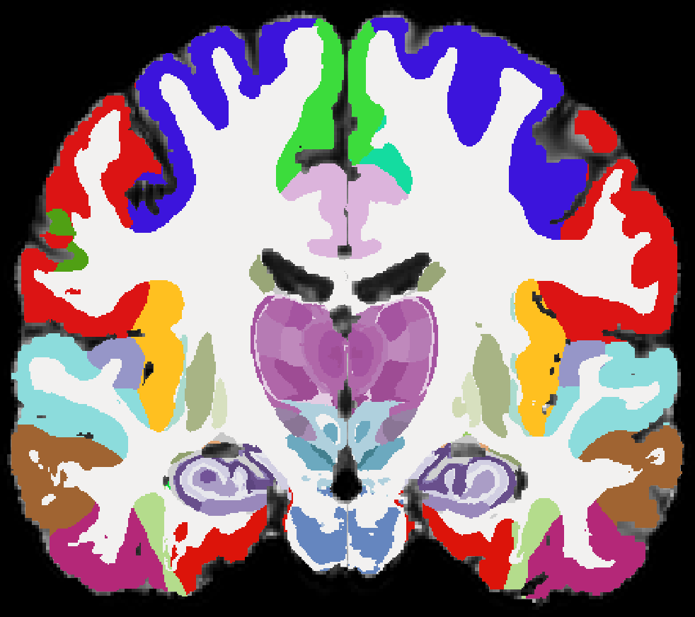
NextBrain parcellation containing 333 anatomical structures (Casamitjana et al. 2024)
This is the state-of-the-art for anatomically-based ROI definition based on deep learning